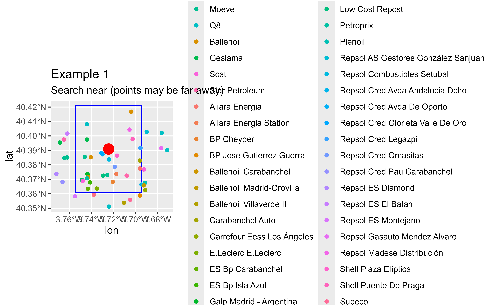

This function is useful for extracting places with a given category (or list
of categories) near or within a given location or area. This is a wrapper
of arc_geo(), but it is vectorized over category.
See arc_categories for a detailed explanation and available values.
Note that for obtaining results it is needed:
Either to provide a pair of coordinates (
x,yarguments) that would be used as a reference for geocoding.Or a viewbox (aka bounding box) on the
bboxargument defining a desired extent of the results.
It is possible to combine the two approaches (i.e. providing x,y,bbox
values) in order to boost the geocoding process. See Examples.
Usage
arc_geo_categories(
category,
x = NULL,
y = NULL,
bbox = NULL,
name = NULL,
lat = "lat",
long = "lon",
limit = 1,
full_results = FALSE,
verbose = FALSE,
custom_query = list(),
...
)Arguments
- category
A place or address type that can be used to filter results. Several values can be used as well as a vector (i.e.
c("Cinema", "Museum")), performing one call for each value. See Details.- x
longitude values in numeric format. Must be in the range \(\left[-180, 180 \right]\).
- y
latitude values in numeric format. Must be in the range \(\left[-90, 90 \right]\).
- bbox
A numeric vector of latitude and longitude
c(minX, minY, maxX, maxY)that restrict the search area. See Details.- name
Optionally, a string indicating the name or address of the desired results.
- lat
latitude column name in the output data (default
"lat").- long
longitude column name in the output data (default
"lon").- limit
maximum number of results to return per input address. Note that each query returns a maximum of 50 results.
- full_results
returns all available data from the API service. This is a shorthand of
outFields=*. See References. IfFALSE(default) only the default values of the API are returned. See alsoreturn_addressesargument.- verbose
if
TRUEthen detailed logs are output to the console.- custom_query
API-specific arguments to be used, passed as a named list.
- ...
Arguments passed on to
arc_geosourcecountrylimits the candidates returned to the specified country or countries. Acceptable values include the three-character country code. You can specify multiple country codes to limit results to more than one country.
outsrThe spatial reference of the
x,ycoordinates returned by a geocode request. By default isNULL(i.e. the argument won't be used in the query). See Details and arc_spatial_references.langcodeSets the language in which reverse-geocoded addresses are returned.
Value
A tibble object with the results. See the details of the output in ArcGIS REST API Service output.
Details
Bounding boxes can be located using different online tools, as Bounding Box Tool.
For a full list of valid categories see arc_categories. This function is
vectorized over category, that means that it performs one independent call
to arc_geo() for each category value.
arc_geo_categories() also understands a single string of categories
separated by commas ("Cinema,Museum"), that would be internally treated as
c("Cinema", "Museum").
outsr
The spatial reference can be specified as either a well-known ID (WKID). If not specified, the spatial reference of the output locations is the same as that of the service (WGS84, i.e. WKID = 4326)).
See arc_spatial_references for values and examples.
See also
ArcGIS REST Category filtering.
Other functions for geocoding:
arc_geo(),
arc_geo_multi(),
arc_reverse_geo()
Examples
# \donttest{
# Full workflow: Gas Stations near Carabanchel, Madrid
# Get Carabanchel
carab <- arc_geo("Carabanchel, Madrid, Spain")
# CRS
carab_crs <- unique(carab$latestWkid)
library(ggplot2)
base_map <- ggplot(carab) +
geom_point(aes(lon, lat), size = 5, color = "red") +
geom_rect(aes(xmin = xmin, xmax = xmax, ymin = ymin, ymax = ymax),
fill = NA,
color = "blue"
) +
coord_sf(crs = carab_crs)
# Ex1: Search near Carabanchel (not restricted)
ex1 <- arc_geo_categories("Gas Station",
# Location
x = carab$lon, y = carab$lat,
limit = 50, full_results = TRUE
)
# Reduce number of labels to most common ones
library(dplyr)
labs <- ex1 |>
count(ShortLabel) |>
slice_max(n = 7, order_by = n) |>
pull(ShortLabel)
base_map +
geom_point(data = ex1, aes(lon, lat, color = ShortLabel)) +
scale_color_discrete(breaks = labs) +
labs(
title = "Example 1",
subtitle = "Search near (points may be far away)"
)

# Example 2: Include part of the name, different results
ex2 <- arc_geo_categories("Gas Station",
# Name
name = "Repsol",
# Location
x = carab$lon, y = carab$lat,
limit = 50, full_results = TRUE
)
base_map +
geom_point(data = ex2, aes(lon, lat, color = ShortLabel)) +
labs(
title = "Example 2",
subtitle = "Search near with name"
)
 # Example 3: Near within a extent
ex3 <- arc_geo_categories("Gas Station",
name = "Repsol",
bbox = c(carab$xmin, carab$ymin, carab$xmax, carab$ymax),
limit = 50, full_results = TRUE
)
base_map +
geom_point(data = ex3, aes(lon, lat, color = ShortLabel)) +
labs(
title = "Example 3",
subtitle = "Search near with name and bbox"
)
# Example 3: Near within a extent
ex3 <- arc_geo_categories("Gas Station",
name = "Repsol",
bbox = c(carab$xmin, carab$ymin, carab$xmax, carab$ymax),
limit = 50, full_results = TRUE
)
base_map +
geom_point(data = ex3, aes(lon, lat, color = ShortLabel)) +
labs(
title = "Example 3",
subtitle = "Search near with name and bbox"
)
 # }
# }